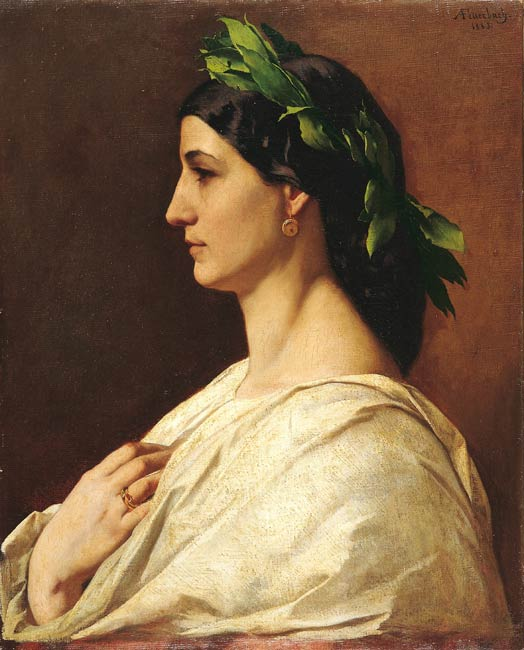

education
2016 until today
communication design BA programme, HTW Berlin
2015-2016
technical environmental protection BA programme, TU Berlin
2012-2014
Deutsche Schule Shanghai, Shanghai
2006-2012
Otto-von-Taube Gymnasium, Gauting
2002-2006
Josef-Dosch-Grundschule, Gauting
work
- 2017 non-salary graphic designer, Flüchtlingsheim Spandau
- 2016-2016 working student in design sourcing, Pamono Berlin
- 2016-2016 internship design sourcing, Pamono Berlin
- 2014-2015 fulltime employment, biokultur Stockdorf
- 2011-2012 Minijob, Bäckerei Cramer Gauting